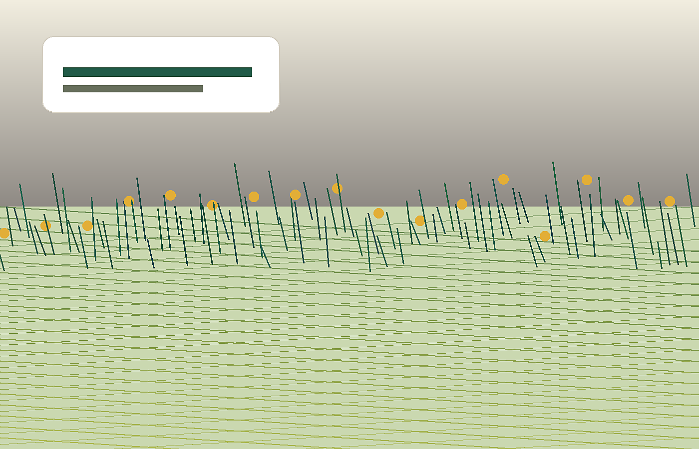

Department of Agriculture · Kosgi Division · Narayanpet District
100 Farmers - 100 Innovative Agriculture Activities
A flagship initiative to transform Kosgi Division into a model hub of innovative, sustainable, and income-oriented agriculture.

About the programme
Income-oriented agriculture with visible field models
The programme aligns with government priorities for doubling farmers' income, reducing cultivation cost, and promoting each farmer as an agri-entrepreneur.
100 innovative activities
Filterable activity directory
Browse the complete list from the source document. The cards are rendered from content/activities.json so the directory can later move into a CMS.
No activities match those filters.
Implementation plan
Selection, training, execution, monitoring
The implementation model is built around one farmer per activity, practical training support, field-level execution, and regular monitoring.
Department convergence
Multi-department support framework
Each model activity can be supported by the most relevant department or institutional partner.
Expected outcomes
Designed for direct and indirect transformation
The initiative is intended to create measurable field impact while building wider confidence in diversified and innovation-led agriculture.
News & gallery
Ready for ongoing publishing
Reserved slots for field activities, farmer stories, training sessions, event updates, and photo galleries.
Final activity
Mega Kisan Mela
The programme culminates in a public showcase bringing together all models, demonstrations, and recognition activities under one roof.
Contact
Official project contact
For programme details, partner outreach, or future updates, use the official contact details from the source document.